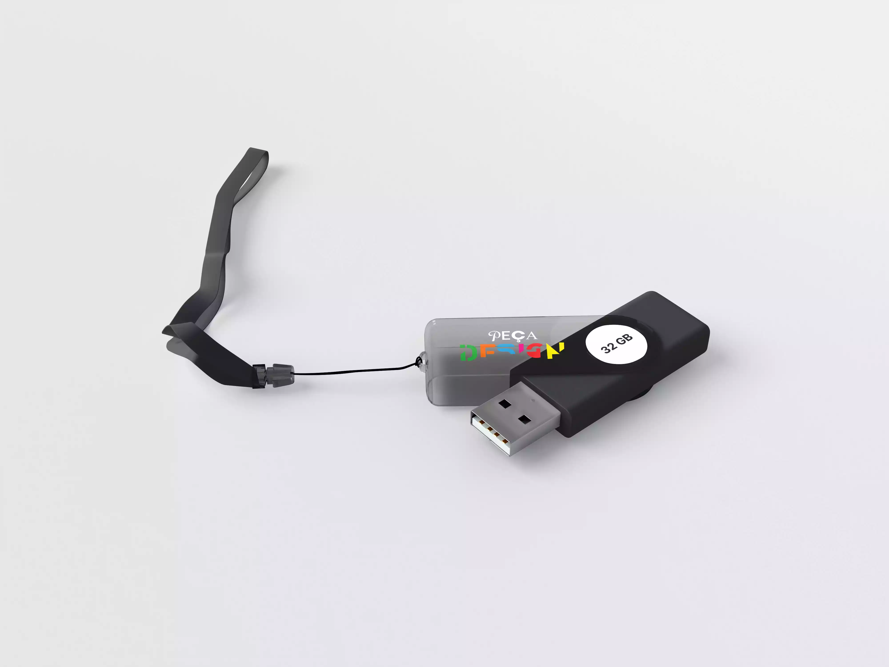

O Pebolim
Nossa tarefa era gravar um vídeo que continha uma abertura de porta, então eu e meu grupo gravamos um vídeo com o tema de pebolim
Peça Design - Poster
O meu objetivo era criar uma marca para um evento de design, com pôsteres e brindes, como Pendrives e broches. Trabalho feito em parceria com a Leths
Mockup: Freepik

Peça Design - Pendrive
O meu objetivo era criar uma marca para um evento de design, com pôsteres e brindes, como Pendrives e broches. Trabalho feito em parceria com a Leths
Mockup: Freepik
It, a Coisa – Comparação com o original
Nosso objetivo era recriar uma cena de algum filme, série, vídeo, novela... de no mínimo 3 minutos. O vídeo escolhido foi uma cena do filme It, a Coisa. Na esquerda é o vídeo original, e o da direita é a nossa recriação.
It, a Coisa
Nosso objetivo era recriar uma cena de algum filme, série, vídeo, novela... de no mínimo 3 minutos. O vídeo escolhido foi uma cena do filme It, a Coisa.
Vídeo comercial – Big
Tínhamos como objetivo a escolha de um mercado para a realização de um vídeo promocional com no mínimo 3 itens. O mercado escolhido foi o Big
Site do Sherlock Holmes
Com o intuito de melhorar nossas habilidades em CSS, o professor passou um desafio de construir uma folha de estilos para o site do Lupin e do Sherlock Holmes
Peça Design
O meu objetivo era criar uma marca para um evento de design, com pôsteres e brindes, como Pendrives e broches. Trabalho feito em parceria com a Leths.
Mockup: Freepik

.webp)